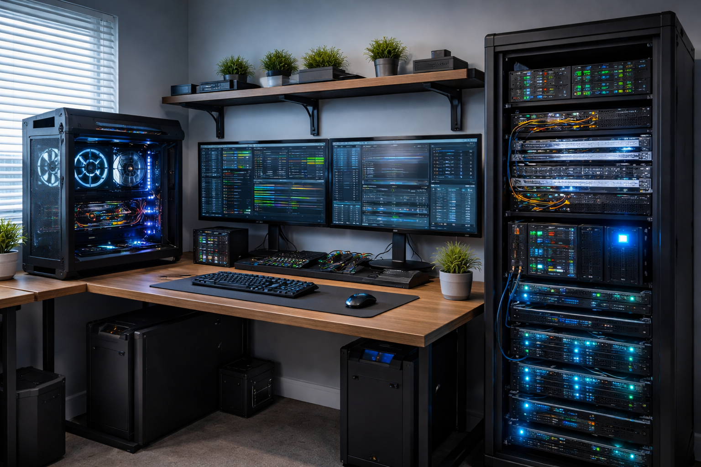
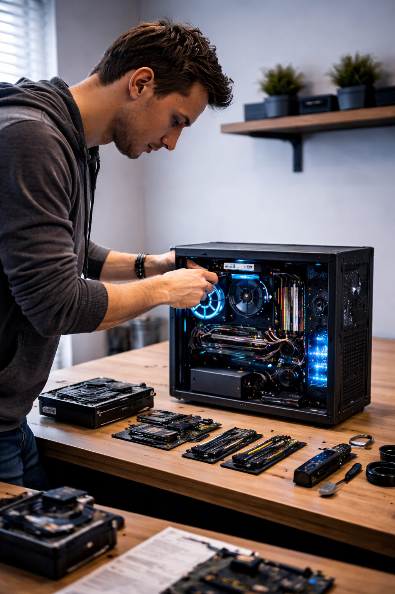
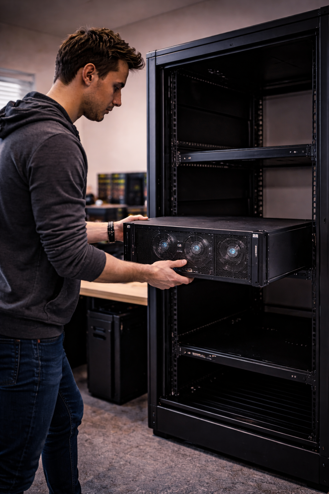
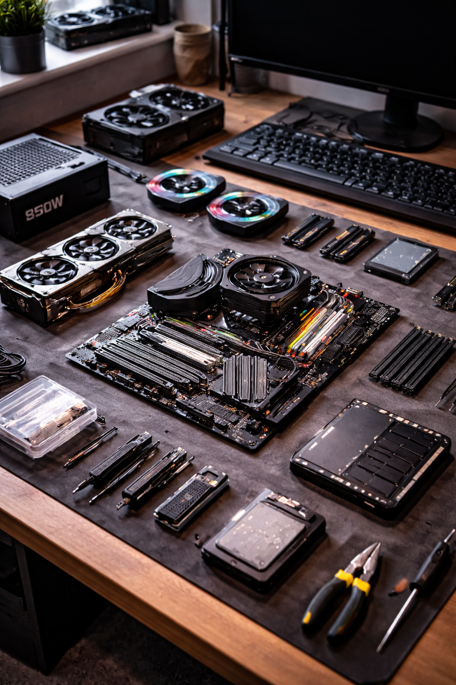
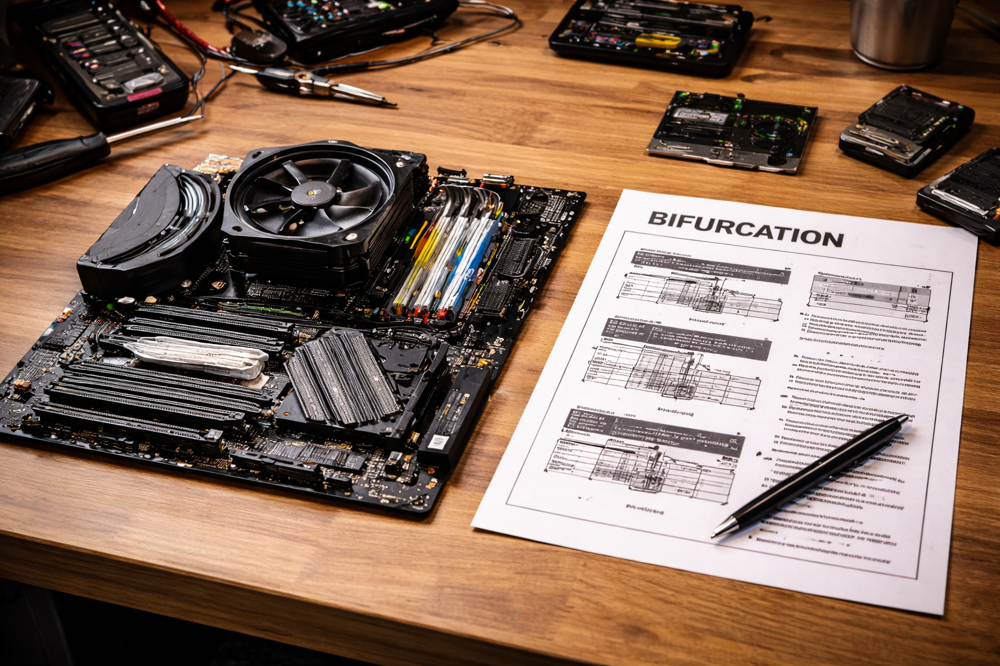
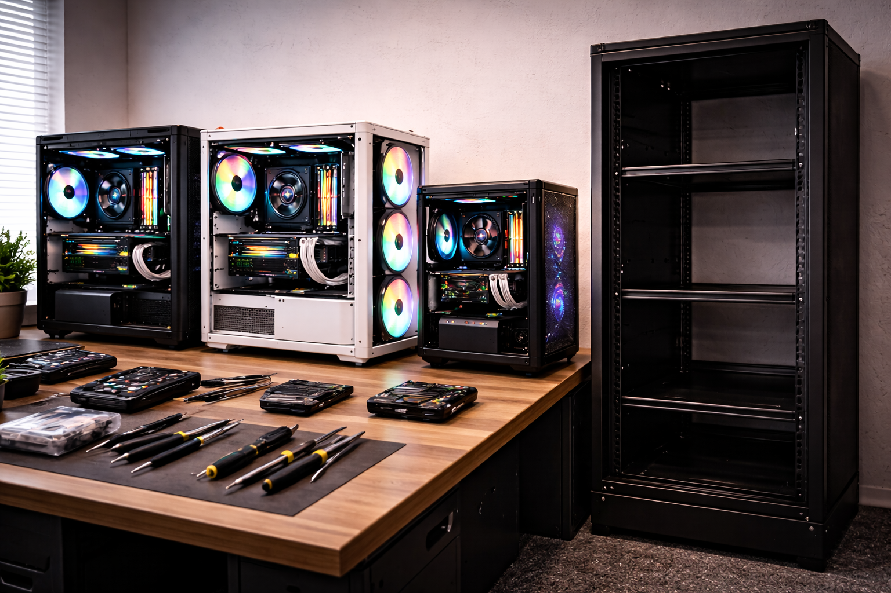
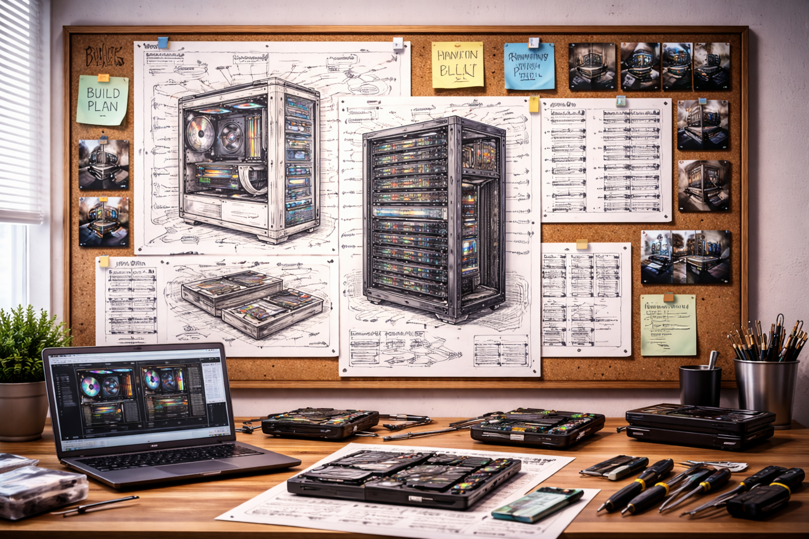

What: What This Hobby Is
My hobby is building custom PCs and homelab systems. A custom PC is a computer assembled from individually selected parts such as the processor, graphics card, memory, cooling, and storage. A homelab is a personal technology environment used to learn, test, and experiment with servers, virtualization, networking, storage, and automation.
This hobby combines creativity and technical skill. It is part engineering project, part design project, and part learning platform. Every build can be optimized for a different goal such as gaming, video editing, virtualization, media storage, or learning enterprise-style infrastructure.
Main Parts of the Hobby
- Choosing computer components that work well together
- Assembling and cable-managing the system cleanly
- Installing operating systems, hypervisors, and services
- Testing performance, cooling, storage, and reliability

AI image prompt: “photorealistic custom PC desk setup with a small home server, networking gear, dual monitors, cool blue lighting, clean cable management, modern tech workspace”
Who: Who Enjoys This Hobby
Many kinds of people enjoy building PCs and homelabs. Students use them to practice technical skills outside class. Gamers build systems tailored to their favorite games. IT professionals use homelabs to explore virtualization, storage, containers, and cybersecurity tools. Hobbyists enjoy the process of planning, building, tuning, and improving systems over time.
Common People in the Hobby
- Students learning hardware and networking
- Gamers who want high performance and customization
- Developers testing software and virtual machines
- IT enthusiasts learning server and cloud concepts
Why They Like It
People enjoy this hobby because it gives them control over the system they use. It also helps them build practical experience that connects directly to real-world computing jobs and personal projects.
| Builder Type | Main Goal | Example Project |
|---|---|---|
| Student | Learn core IT skills | Linux server with virtual machines |
| Gamer | Get top performance | High-refresh gaming PC |
| IT Enthusiast | Practice enterprise concepts | Rack server with storage and containers |

AI image prompt: “photorealistic person building a custom desktop PC at a workbench with motherboard, GPU, tools, and organized parts, realistic indoor lighting”
When: Best Times to Work on the Hobby
This hobby usually happens during evenings, weekends, school breaks, or any time someone can focus without rushing. Building a PC carefully takes time, especially when installing parts, routing cables, updating firmware, and testing system stability. Homelab work often happens in phases, with planning first and upgrades later.
Good Times for Different Tasks
- Weeknights for research, software updates, and planning
- Weekends for assembly, upgrades, and cable management
- Semester breaks for larger rebuilds or rack projects
| Time | Best Activity | Reason |
|---|---|---|
| Evening | Research and software setup | Lower effort and easier to pause |
| Weekend | Assembly and testing | More uninterrupted time |
| Breaks / Holidays | Major rebuild or homelab expansion | Enough time for troubleshooting |

AI image prompt: “photorealistic home server rack glowing in a dark room, organized cables, switches and blinking status lights, realistic tech photography”
Where: Best Places for the Hobby
A custom PC can be built almost anywhere with a stable table, good lighting, and enough space to organize parts. Homelabs usually work best in offices, spare rooms, basements, or dedicated corners where sound, heat, and cables can be managed well. The location matters because airflow, power, dust, and noise all affect the system.
Good Build Locations
- Desk or large table with room for parts
- Cool room with good airflow
- Area with reliable power and internet access
Things to Avoid
- Cluttered areas with little workspace
- Hot rooms with poor ventilation
- Dusty spaces or carpet-heavy areas when handling parts

AI image prompt: “photorealistic computer parts laid out neatly on a desk including motherboard, graphics card, RAM, fans, storage drives, clean and organized workstation”
For a homelab, a room with shelves or a rack can make the project feel much more professional. It also helps separate experimental gear from daily-use devices.
How: How to Get Started
The best way to start is with a simple goal. For example, someone might want to build a gaming PC, a file server, or a small virtualization host. After choosing the goal, the next steps are selecting compatible parts, assembling the hardware carefully, installing the software, and testing the final system.
| Step | Action | Purpose |
|---|---|---|
| 1 | Choose a goal | Know whether the system is for gaming, storage, or learning |
| 2 | Select compatible parts | Avoid hardware mismatch problems |
| 3 | Assemble the hardware | Create a working physical system |
| 4 | Install software | Set up the operating system or hypervisor |
| 5 | Test and improve | Check temperatures, performance, and stability |
Starter Advice
- Start smaller than your dream setup, then grow it over time
- Read hardware compatibility before ordering parts
- Label cables and document what each device does
- Keep backups if your homelab stores important files

AI image prompt: “photorealistic custom computer being assembled in an open case, visible cables, tools, fans, and cooling components, realistic detailed tech scene”
Why: Why I Enjoy This Hobby
I like this hobby because it mixes problem solving, creativity, and real technical skill. Every project has design choices, performance tradeoffs, and practical goals. It is rewarding to start with separate parts and end with a working system that is useful, powerful, and personalized.
This hobby also connects strongly to my academic and professional interests. It builds experience with hardware, virtualization, networking, storage, and systems thinking. In other words, it is fun, but it also teaches useful skills that matter outside the hobby itself.
Reasons This Hobby Matters to Me
- It helps me understand how computing systems really work
- It supports learning related to IT and infrastructure
- It allows me to create systems built for my own needs
- It is satisfying to improve and upgrade projects over time

AI image prompt: “photorealistic futuristic homelab room with custom PC, glowing server rack, modern lighting, clean layout, realistic detailed technology environment”
AI Prompts: How AI Was Used
AI model used: ChatGPT
Purpose: brainstorming hobby page structure, helping write section content, and organizing and creating image prompts.
Main Prompts Used
- “Help me plan a single-page hobby site about homelabs and custom PC building. I want to include sections for what, who, when, where, how, and why, plus a section about how I used AI to create the site.”
- “What should I put in for the text content for these sections?”
- “Check if I am missing any important information for the rubrick sections and suggest improvements.”

AI image prompt: “clean concept art style planning board showing a custom PC build, homelab rack, sketches, diagrams, and a polished modern tech design theme”